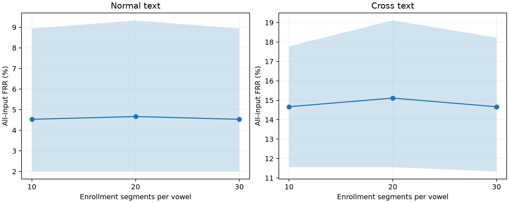

Phase 8: 母音の登録10・20・30区間の実測比較
固定した境界内母音encoderを使い、同じ照合発話内の全利用可能母音で照合した。5母音必須・等重み統合は変更せず、登録区間数だけを変えた。閾値は登録数ごとにvalidation通常文で決定し、通常文・別テキストの評価へ固定適用した。
既に観測済みのJVS testを用いた探索的な追加検証。新しい独立holdoutの評価ではなく、別日・別端末の性能は未確認。CIは固定モデル・固定閾値での話者bootstrapで、学習・閾値校正の不確かさを含まない。
通常文：validation目標FAR 1%
別テキスト：validation目標FAR 1%
登録数による差
負の値は本人拒否率の減少。共有10,000回の話者bootstrap。
登録音声量
元WAV総時間は今回選択した録音の合計時間で、最短の必要録音時間ではない。内部利用時間は250 ms crop後の音声の和集合。登録区間数を増やしても、照合発話の5母音不足は解消しない。
図と全動作点

全12条件・3動作点CSV / 全paired差CSV
検証
登録10のprofile・score・閾値・test指標・CIは既存結果と一致。重み・特徴統計・元音声は不変。